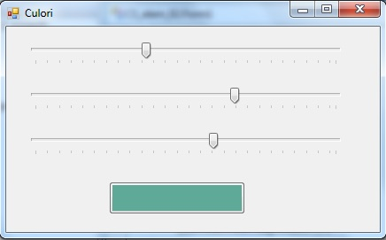
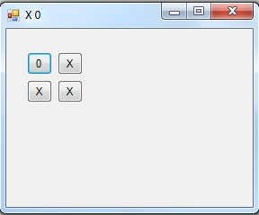

Folosind functia afis_bin() si _sleep(), realizati un joc de lumini.
Descompunerea unui numar intreg<999 in sute,zeci, unitati si afisarea lor temporizata.
Realizati un program pentru calculul diagonalei si ariei unui patrat
-se include biblioteca matematica folosind declaratia #include < math.h >
-se foloseste spatiul de nume std
-se cere lungimea laturii patratului
-se afiseaza diagonala si aria patratului
-se vor folosi functiile sqrt() si pow() din biblioteca math.h
Realizati un program pentru calculul ipotenuzei cand se cunosc catetele (in std si System:)
-se cere cateta1
-se cere cateta2
-se afiseaza ipotenuza
-se va folosi functia sqrt()
Realizati un program pentru rezolvarea unui triungi (cazul LLL, LUL,ULU) (in std si System:)
-se cer trei parametri
-se afiseaza restul parametrilor
-se vor folosi functiile sin() si cos() din math.h
Realizati un program pentru calculul pretului cu TVA, valorii cu TVA si valoarea TVA-ului
-se cere cantitatea si pretul
-se afiseaza pretul cu TVA, valoarea cu TVA si valoarea TVA-ului
Realizati un program pentru calculul expresiei pow(x,3.0)*(7*y+sqrt(7*pow(z,4.0)))/(x+y)*pow((z-x),2.0);
-se cer z,y,z
-se afiseaza rezultatul
Realizati un program pentru conversia temperaturii in gr Celsius, Farenheit, Kelvin (in std si System:)
-se cere temperatura in grade Celsius
-se afiseaza temperatura in gr Celsius, Farenheit, Kelvin (tF=t*1.8+32) (tK=t+273.15)
Realizatiun program pentru conversia temperaturii utilizand WFA
Realizati un program pentru afisarea sinusului unui unghi utilizand WFA si controlul TrackBar
Realizati un program utilizand WFA si controlul TrackBar pentru a colora un buton.

Realizati un program utilizand WFA in care plasam 4 butoane. La apasarea oricarui buton sa se sctrie textul X pe buton iar la pozitionarea
cu mouse-ul pe buton si apasarea oricarei taste, sa se sctrie textul 0 pe buton.

Realizatiun program pentru conversia unui numar intreg in binar
-se cere un numar intreg intre 0 si 255
-folosind operatorul operatorul % (modulo) si impartiri repetate afisati, unumarul in binar
-folosind operatorul operatorul % (modulo) si impartiri repetate afisati, unumarul in binar (bitii fiind afisati in ordine inversa)
-folosind operatorul operatorul % (modulo) , impartiri repetate si back space (\b) afisati, unumarul in binar (bitii fiind afisati in ordine directa)
-afisati numarul in binar, apoi folositi operatorul de siftare dreapta pentru a deplasa numarul initial dreapta cu o pozitie, apoi afisati binar numarul obtinut.